Assignment 4 - UniversalWeekly AI Weekly Report Management System
Assignment 4 - UniversalWeekly AI Weekly Report Management System
Student Information
- Name: Qi Yongpeng
- Student ID: ZY2557206
- Project Name: UniversalWeekly
- Project Type: Dual-role weekly report management system
- Main Technology Stack: Python, PyQt6, SQLite, Matplotlib, local LLM / DeepSeek API
Source Code Package
The complete project source code package is available here:
Download UniversalWeekly Source Code
Assignment 4 Project Report
UniversalWeekly
UniversalWeekly is a desktop application designed for weekly report submission, teacher review, progress tracking, AI-assisted writing, and academic utility tools. The project focuses on a practical student-teacher workflow rather than a single isolated function.
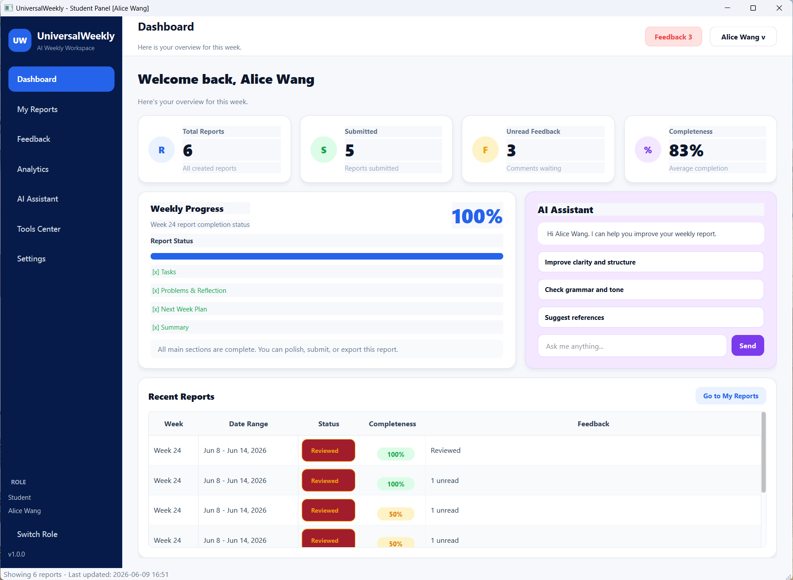
1. Project Background
Weekly reports are commonly used in coursework, graduation projects, software engineering training, and research supervision. However, the traditional workflow usually depends on fragmented tools such as Word documents, spreadsheets, chat messages, and email attachments. This makes it difficult for students to manage report drafts, track feedback, review historical progress, and generate structured summaries.
UniversalWeekly was developed to solve this problem. It provides an integrated weekly report management platform with two main roles: students and teachers. Students can create, edit, submit, export, and improve weekly reports. Teachers can review reports, comment on student work, manage feedback templates, and check class-level progress. The system also includes an AI assistant that helps students generate report content from keywords, polish language, check completeness, and prepare presentation scripts.
The goal of this assignment is not only to implement a working application, but also to present a complete software product with clear user flows, data storage, interface design, AI integration, and visual analytics.
2. System Objectives
The system was designed around the following objectives:
- Build a dual-role weekly report platform for both students and teachers.
- Support the full weekly report workflow: create, edit, submit, review, revise, export, and archive.
- Provide AI-assisted writing functions for generating, polishing, translating, and summarizing content.
- Use SQLite to persist users, weekly reports, tasks, problems, comments, templates, and logs.
- Provide dashboard views and statistical charts for progress tracking.
- Add academic and productivity tools such as reference conversion, file conversion, translation, paper reading cards, memo board, weather/time, and AI call history.
- Improve the user interface with a modern SaaS dashboard style.
3. Development Environment and Technology Stack
| Layer | Technology | Function |
|---|---|---|
| GUI Framework | PyQt6 | Desktop interface, dialogs, tables, cards, navigation |
| Database | SQLite | Local data storage for users, reports, tasks, feedback, logs |
| Visualization | Matplotlib | Statistics charts and progress views |
| AI Service | Local LLM / DeepSeek API | Weekly report generation, polishing, paper card generation, translation |
| Export | Markdown, TXT, DOCX, Excel | Report and statistics export |
| Application Style | QSS | Consistent component design and modern interface styling |
The project uses a layered structure. The database module manages persistent data, the business module implements service logic, and the ui module contains all graphical user interfaces. This separation makes the program easier to maintain and extend.
4. Overall System Architecture
UniversalWeekly is organized into four major layers:
- User Interface Layer: Login page, student dashboard, teacher dashboard, report editor, tool dialogs, AI assistant window.
- Business Service Layer: Authentication, report processing, export, template management, local LLM service, translation, file conversion.
- Data Layer: SQLite database, data models, operation logs, report records, comments, tasks, problems.
- AI and Utility Layer: DeepSeek chat assistant, local LLM integration, paper reading card generation, presentation report generation, AI call history.
The core workflow is shown below:
1 | |
This structure allows the system to serve both individual students and class-level teachers.
5. Login and Role Management
The login interface is the entrance of the system. It supports student and teacher accounts and can route different users to different main windows after successful authentication. The system also contains demo accounts, making it convenient for testing and classroom demonstration.
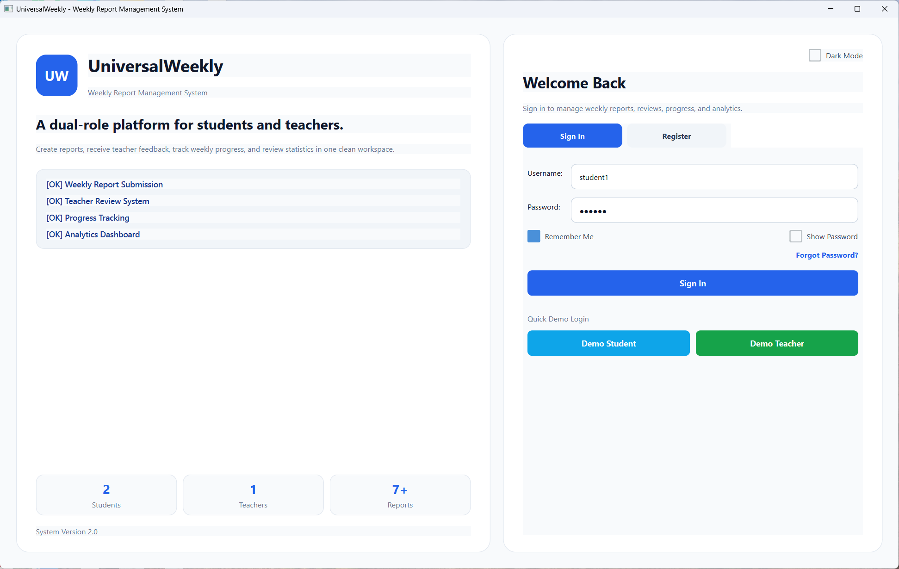
The login module includes:
- Student and teacher identity management.
- Login and registration functions.
- User profile fields such as name, student ID, class, and email.
- Automatic routing to the student interface or teacher interface.
- Local SQLite authentication.
This design makes the application more realistic than a single-user report tool, because weekly report management is naturally a communication process between students and teachers.
6. Student Main Page and Dashboard
The student dashboard provides an overview of personal weekly report activity. It uses a modern dashboard layout with cards, statistics, recent reports, and quick actions.
The dashboard contains:
- Total reports.
- Submitted reports.
- Unread feedback.
- Average completeness.
- Recent weekly report preview.
- Quick entrance to the AI assistant and tools center.
This page is designed as a control center. Instead of forcing users to search for functions in multiple windows, the dashboard summarizes the most important status information and provides direct access to common actions.
7. Weekly Report Management
The My Reports page is the core module for students. It allows students to create new reports, edit drafts, submit completed reports, view details, export reports, and use AI-related actions.
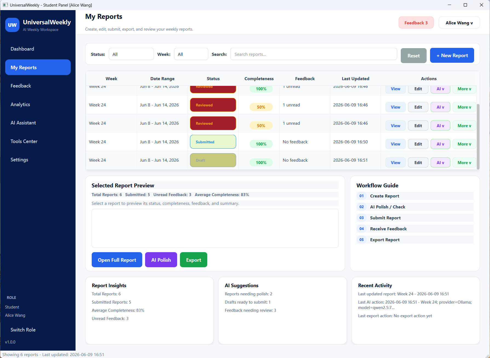
The weekly report structure is divided into several parts:
- Tasks: work completed during the week.
- Problems and reflection: difficulties, causes, and solutions.
- Next week plan: future tasks and priorities.
- Summary: final weekly report content generated or edited by the student.
The system calculates report completeness based on the required content sections. This helps students understand whether a report is ready to submit. The report table also supports status badges, feedback status, last update time, and compact action buttons.
8. AI Report Generation
One of the most important features of UniversalWeekly is the AI weekly report builder. Students can enter keywords for tasks, problems, reflection, and next week plans. The AI then generates more complete and formal report content.
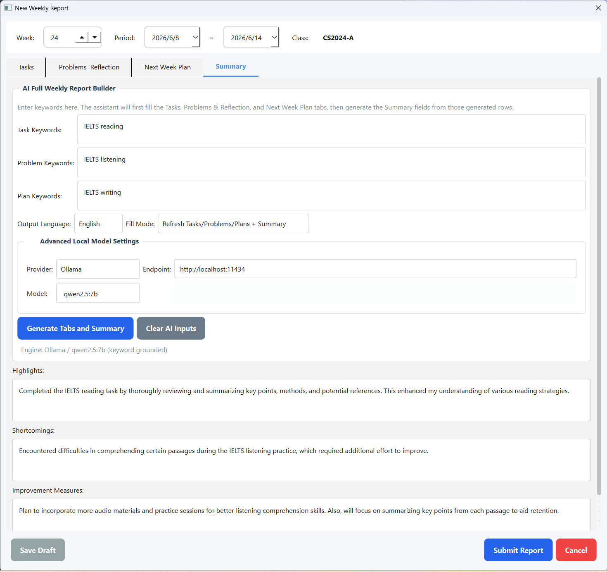
This function is useful because students often know what they have done, but may not know how to organize it into a formal weekly report. The AI module converts short keywords into structured writing while preserving the report workflow.
The AI report builder supports:
- Generating report sections from keywords.
- Completing the Tasks section.
- Completing the Problems and Reflection section.
- Completing the Next Week Plan section.
- Generating the final Summary section.
- Logging AI call history for review and transparency.
The system supports local LLM providers such as Ollama as well as OpenAI-compatible endpoints. This design improves flexibility: the application can be used offline with a local model, or online with a stronger cloud model.
9. Embedded AI Assistant
In addition to form-based AI generation, the system includes an embedded AI assistant window. The assistant is designed for natural language interaction. Users can ask it to generate weekly reports, polish text, check completeness, revise according to feedback, or explain how to improve a report.
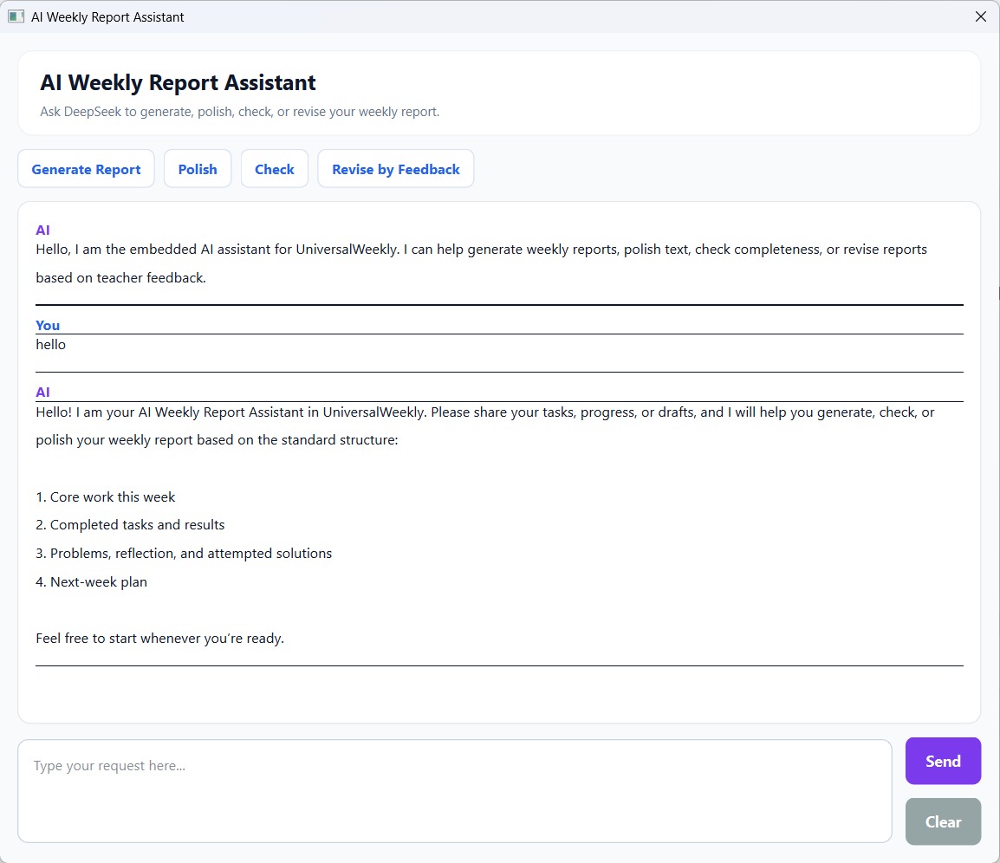
The assistant supports the following scenarios:
- Generate a complete weekly report from keywords.
- Polish a rough paragraph into formal report language.
- Check whether a report contains all required sections.
- Rewrite a report according to teacher feedback.
- Help prepare a presentation script based on a selected report.
This feature makes the system more than a database application. It becomes an AI-assisted writing environment for academic and project progress management.
10. Teacher Review and Feedback
The teacher interface allows teachers to manage student submissions. Teachers can view reports, check report details, add comments, use comment templates, and manage class-level review work.
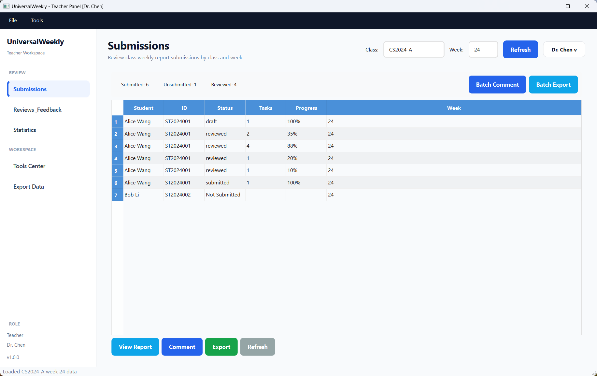
The teacher-side functions include:
- View weekly reports by class and week.
- Check report status and progress.
- Add single comments to a student report.
- Use feedback templates to improve review efficiency.
- Batch review multiple reports.
- View class statistics and high-frequency problems.
The teacher module closes the workflow loop. Students do not only submit reports; they also receive feedback and can revise their work based on teacher comments.
11. Feedback Center
The Feedback module helps students track teacher comments and revision requirements. It avoids the problem of feedback being lost in chat messages or separate files.
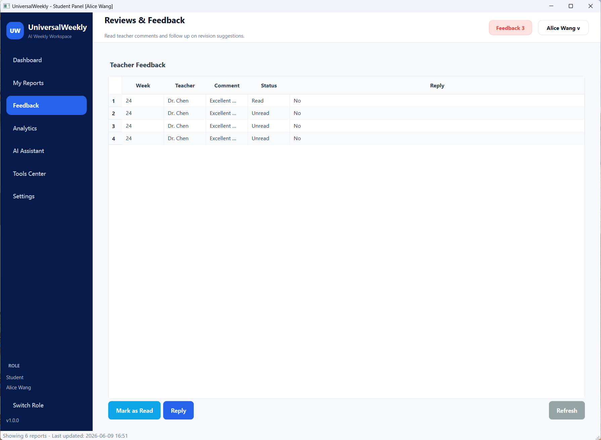
Feedback records include:
- Comment content.
- Related weekly report.
- Read or unread status.
- Reply function.
- Teacher identity.
- Feedback time.
This module improves communication efficiency because students can focus on actionable feedback rather than searching for scattered messages.
12. Analytics and Statistics
UniversalWeekly includes visual statistics for both students and teachers. These charts help users understand progress, submission status, and common problems.
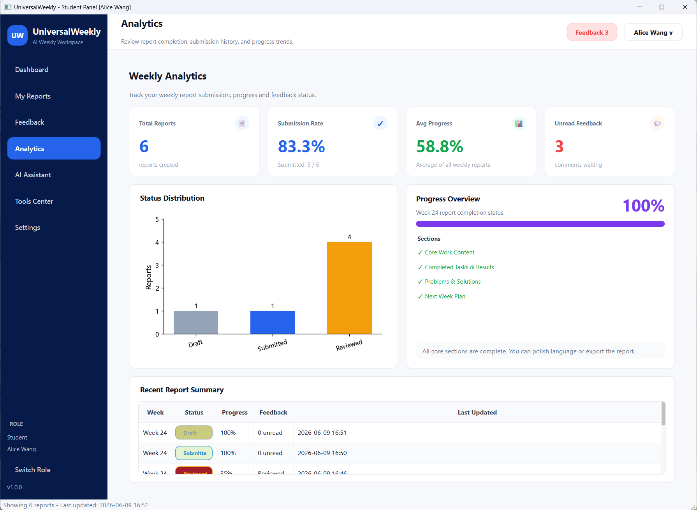
The statistics module includes:
- Submission rate.
- Average progress.
- Status distribution.
- Task completion trend.
- Problem distribution.
- Student progress history.
- Class weekly statistics.
For students, analytics help them review personal learning progress. For teachers, analytics provide class-level decision support, such as identifying students who need help or topics that many students struggle with.
13. Student Statistics
The student statistics view provides a more focused view of individual progress. It visualizes report history and problem distribution so that students can understand their learning pattern over time.
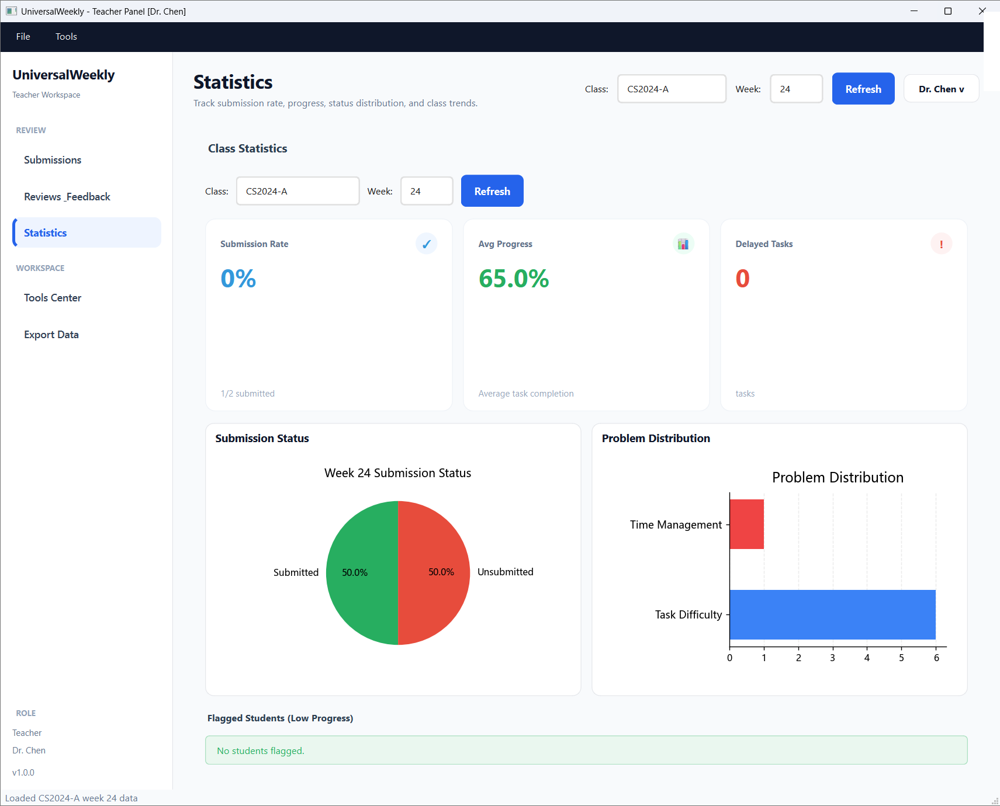
The key value of this module is reflection. Weekly reports should not only be submitted; they should also help students observe their own progress, detect recurring issues, and plan future work more reasonably.
14. Tools Center
The Tools Center integrates several academic and productivity tools into one organized interface.
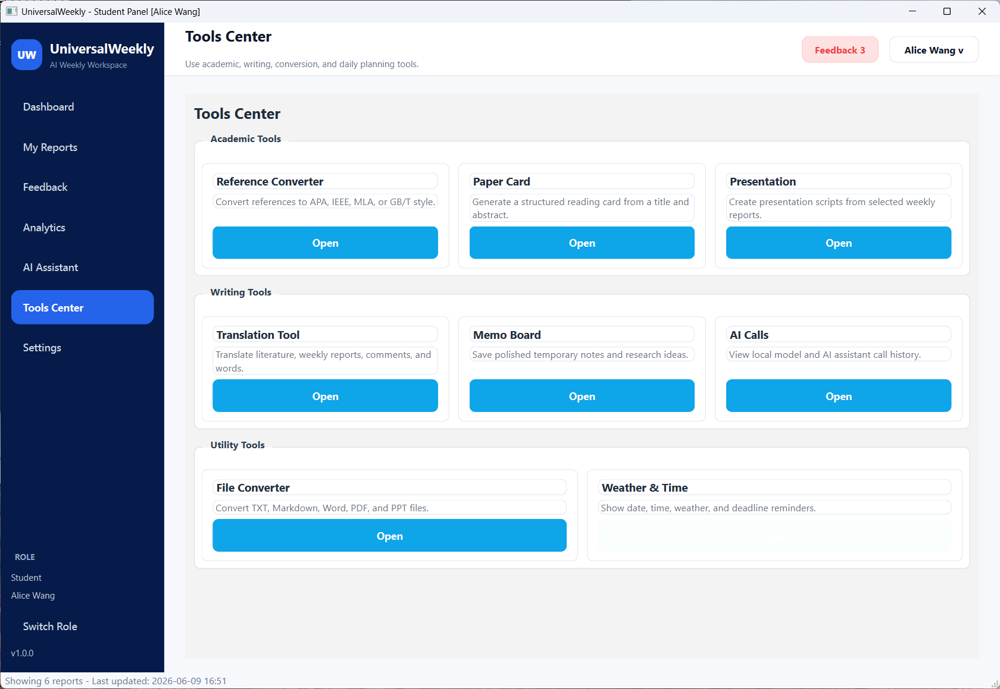
The available tools include:
| Tool | Function |
|---|---|
| Reference Converter | Convert references into common citation styles |
| File Converter | Convert documents into formats such as PDF or PPT where supported |
| Translation Tool | Translate words, sentences, and academic text using local model options |
| Paper Card | Generate a structured reading card from a paper title and abstract |
| Presentation | Generate a speech draft based on a selected weekly report date |
| Memo Board | Record temporary notes and reminders |
| Weather & Time | Show date, time, and weather information |
| AI Calls | View AI model call history |
This design extends the system from a weekly report tool into a small academic workspace.
15. Settings and Personalization
The Settings page allows users to manage profile-related information and system preferences.
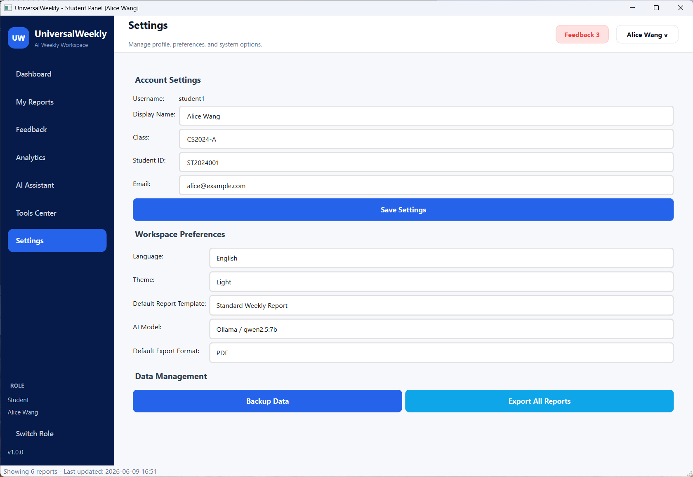
Possible settings include:
- Display name.
- Student ID.
- Class name.
- Email.
- Default export options.
- AI model configuration.
- Theme and interface preferences.
The settings page improves system completeness and gives the application a more realistic product structure.
16. Data Storage and Core Tables
The application stores data locally through SQLite. The main data objects include:
- Users: account, role, class, email, student ID.
- Weekly reports: week number, date range, status, summary, update time.
- Tasks: task title, category, progress, status, tags.
- Problems: problem type, description, solution, reflection.
- Comments: teacher feedback, read status, replies.
- Templates: reusable report and feedback templates.
- Operation logs: user actions and AI call records.
This data model supports both single-user operations and teacher-student collaboration.
17. Export and Archiving
UniversalWeekly supports multiple output formats. Students can export their reports for submission or backup, and teachers can export class statistics.
Supported export functions include:
- Weekly report to Markdown.
- Weekly report to TXT.
- Weekly report to DOCX.
- Statistics to Excel.
- Batch export for multiple reports.
This makes the system practical for real coursework, because final submission often requires an external document file.
18. Interface Design Optimization
The interface was optimized toward a modern SaaS dashboard style. Compared with a simple table-based interface, the improved design uses:
- A clear visual hierarchy.
- Dashboard cards for key metrics.
- Compact table actions.
- Status badges.
- White card components on a light background.
- A dark sidebar in the advanced design.
- Consistent colors for primary, success, warning, danger, and AI actions.
The goal is to make the software look like a complete management platform rather than a collection of independent dialogs.
19. Testing and Validation
The following functions were tested during development:
| Test Area | Expected Result |
|---|---|
| Login | Correctly routes student and teacher accounts |
| Report Creation | Saves draft and submitted reports |
| Report Editing | Loads previous content and updates records |
| AI Generation | Generates report content from keywords |
| Feedback | Teacher comments can be viewed by students |
| Export | Markdown, TXT, DOCX, and Excel export functions run correctly |
| Statistics | Charts display submission and progress data |
| Tools Center | Tool dialogs open from the centralized interface |
During testing, several interface problems were also improved, such as table column widths, button layout, completeness badge display, chart label clipping, and page bottom whitespace.
20. Limitations and Future Work
Although the project already provides a complete weekly report workflow, there are still areas that can be improved:
- The AI assistant can be further connected with all report fields to support more context-aware generation.
- Cloud synchronization can be added so that reports can be accessed from multiple devices.
- Friend sharing and peer review can be added to support collaborative learning.
- A web version can be developed for easier deployment and remote access.
- More advanced analytics can be added, such as risk prediction and personalized learning suggestions.
- Permission management can be enhanced for larger classes and multiple teachers.
21. Conclusion
UniversalWeekly is a dual-role weekly report management system that integrates report submission, teacher feedback, AI-assisted writing, statistics, export, and academic tools. The system demonstrates how a traditional weekly report workflow can be transformed into an intelligent and structured software platform.
The most important value of this project is its complete workflow. Students can create and improve reports, teachers can review and comment, and the AI assistant can help generate, polish, translate, and summarize content. The application therefore supports not only report submission, but also reflection, communication, and continuous learning.
The interactive HTML presentation used during project preparation is also included as an additional artifact: Open UniversalWeekly Presentation.